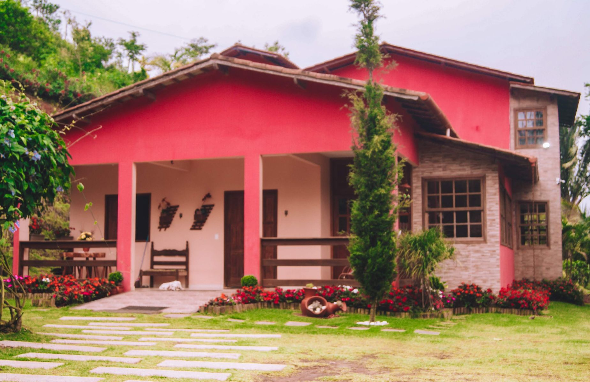

Sinta-se em casa!
Nosso espaço é aconchegante e agradável.
Sinta-se em casa!
Nosso espaço é aconchegante e agradável.

Venha viver momentos incríveis
Local ideal para relaxar a dois
ou aproveitar com a família e amigos.
Local ideal para relaxar a dois
ou aproveitar com a família e amigos.

Ambiente de muita tranquilidade
Excelente para aqueles momentos em que tudo que precisamos
é descansar para recuperar nossas energias!
Faça sua reserva!
Excelente para descansar e recuperar as energias!